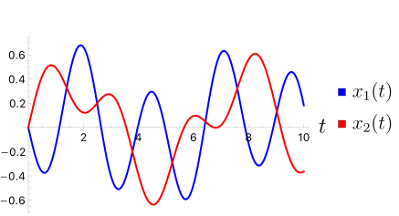

Solve the second-order coupled system of linear differential equations with initial conditions
\begin{equation}
\begin{cases}
x_1'' = -5 x_1 + 2 x_2 , \\
x_2'' = 2 x_1 - 2 x_2, \\
x_1(0) = 0, \quad x_1'(0) = -1, \\
x_2(0) = 0, \quad x_2'(0) = 1.
\end{cases}\tag{5.6.4}
\end{equation}
Taking the Laplace transform yields
\begin{equation*}
\begin{cases}
s^2 X_1(s) - s x_1(0) - x_1'(0) = -5 X_1(s) + 2 X_2(s), \\
s^2 X_2(s) - s x_2(0) - x_2'(0) = 2 X_1(s) - 2 X_2(s).
\end{cases}
\end{equation*}
Using the given initial conditions yields
\begin{equation*}
\begin{cases}
(s^2+5) X_1(s) + 1 = 2 X_2(s), \\
(s^2+2) X_2(s) - 1 = 2 X_1(s).
\end{cases}
\end{equation*}
Solving for \(X_1(s)\) and \(X_2(s)\) gives
\begin{equation*}
X_1(s) = \frac{-s^2}{(s^2 + 1)(s^2 + 6)} \quad \text{and}\quad
X_2(s) = \frac{s^2 + 3}{(s^2 + 1)(s^2 + 6)}.
\end{equation*}
Partial fraction decomposition of \(X_1(s)\) and \(X_2(s)\) are
\begin{equation*}
X_1(s) = \frac{1/5}{s^2 + 1} - \frac{6/5}{s^2 + 6}\quad \text{and}\quad
X_2(s) = \frac{2/5}{s^2 + 1} + \frac{3/5}{s^2 + 6}.
\end{equation*}
Taking the inverse Laplace transform yields
\begin{equation*}
\begin{cases}
x_1(t) &= \frac{1}{5} \sin t - \frac{6}{5 \sqrt{6}} \sin(\sqrt{6} t), \\
x_2(t) &= \frac{2}{5} \sin t + \frac{3}{5 \sqrt{6}} \sin(\sqrt{6} t),
\end{cases}
\end{equation*}
which render the solutions of the given initial value problem (5.6.4).
